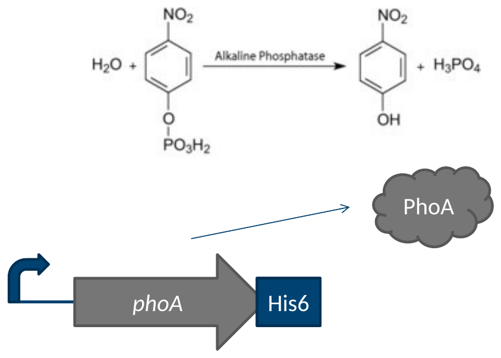
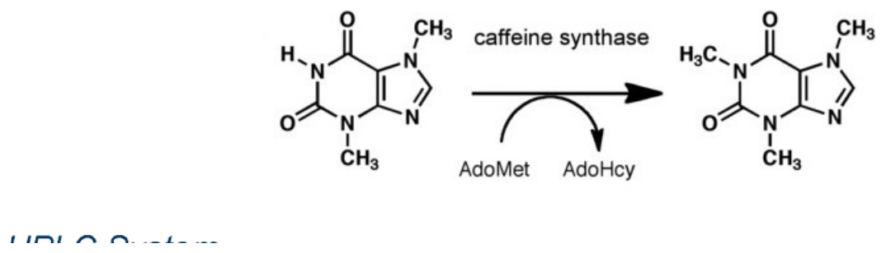
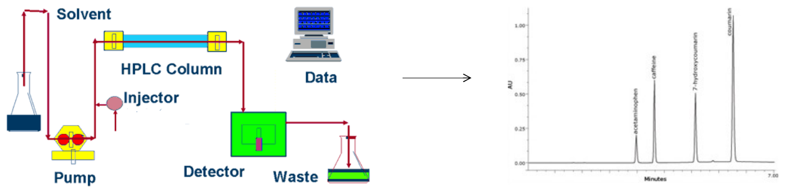
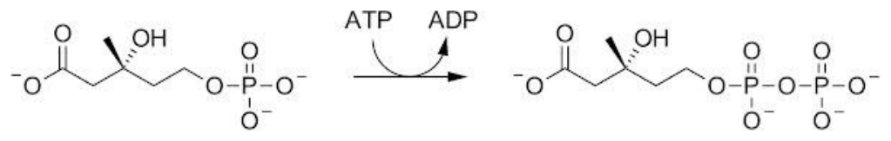
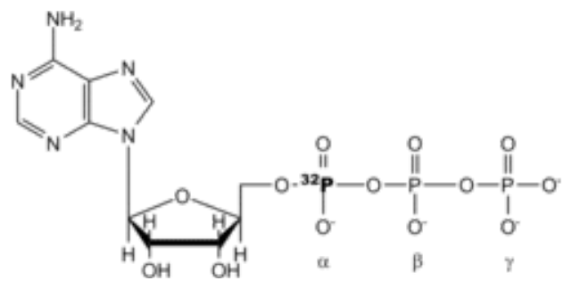
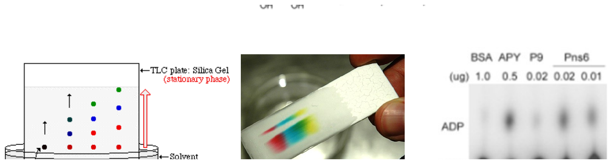

I have expressed the M. jannaschii tyrosine synthetase in E. coli, and purified it by its His-TAG, then dialyzed it into PBS medium. I want to assay whether it will aminoacylate any E. coli tRNAs. How can I do that?
A question: the M. jannaschii tyrosine synthetase has been expressed in E. coli, purified on its His-tag and dialyzed into PBS. How would you assay whether it charges any E. coli tRNA?